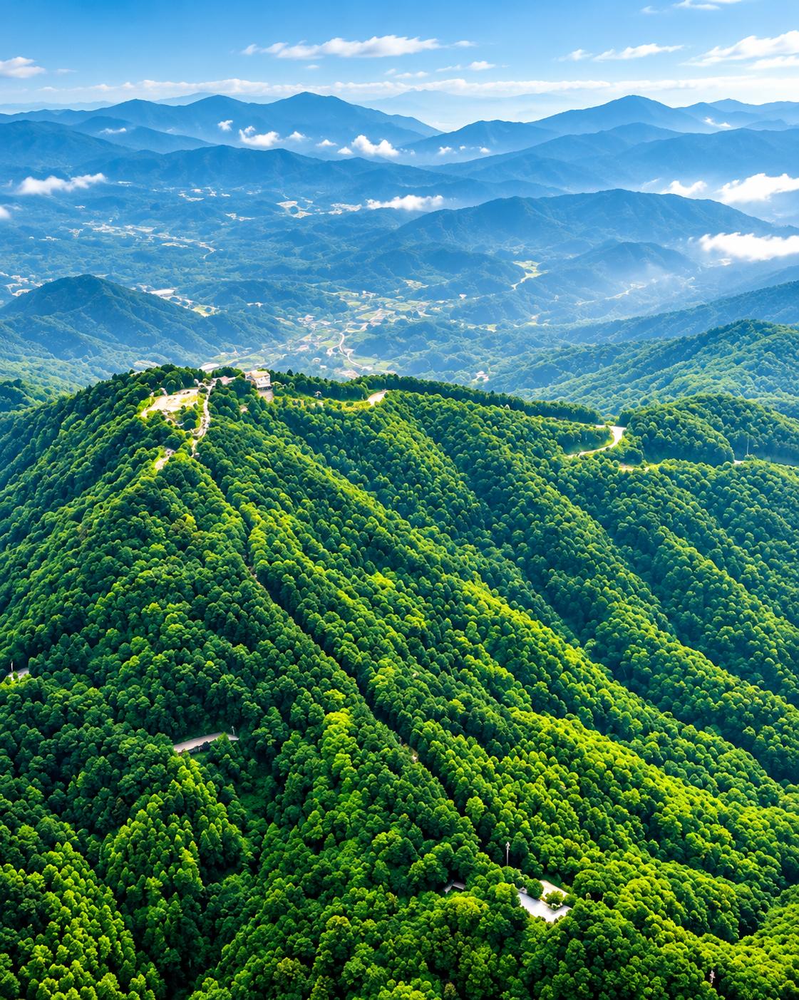

Our Story
Rooted in Nature
SeJane 硒珍 is inspired by the Maofeng Mountain region of Guangzhou, China. Historical brand materials describe naturally occurring selenium and other minerals and trace elements in the source water. We celebrate the natural character of mineral water and the importance of responsible water-source stewardship.
Specific mineral content and standards compliance should be confirmed using current accredited laboratory reports before being presented as verified product claims.
